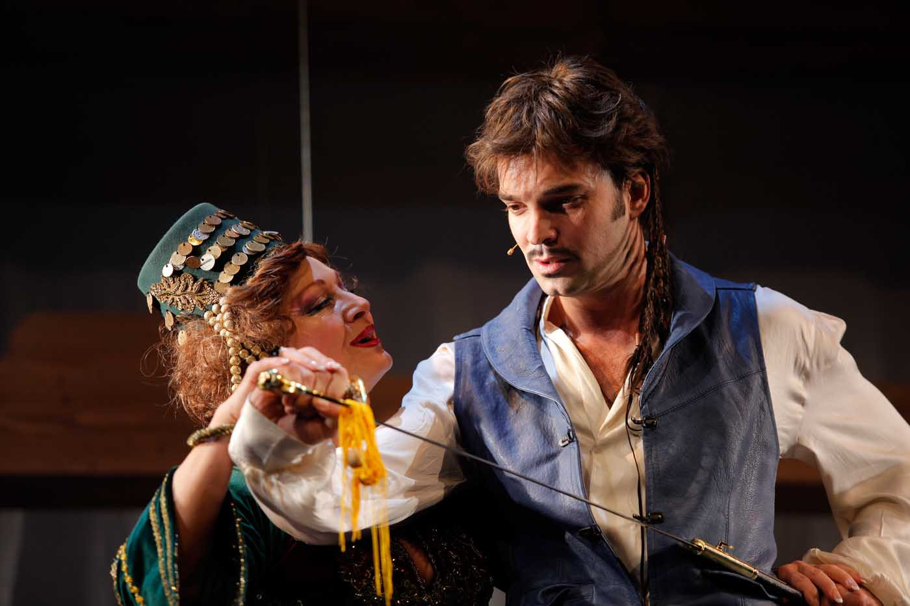
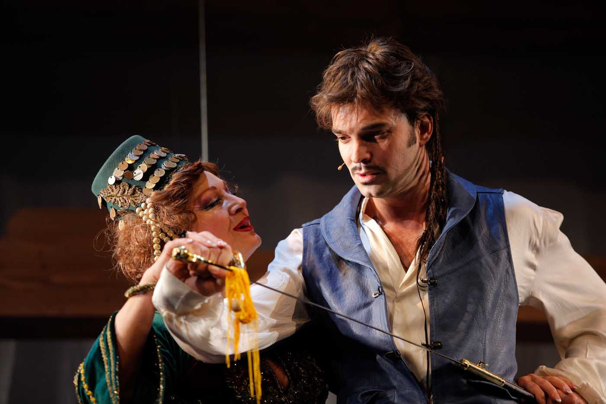

Зона Замфирова
Ко је била Зона Замфирова?
Дуго се чак и међу ученим људима није знало да је Сремац своје најбоље дело написао на основу истинитог догађаја који се одиграо у Приштини крајем 19. века. Целу причу Сремац је чуо од Бранислава Нушића, који је 1895. био српски конзул у Приштини. После доласка из Приштине једне летње вечери на Калемегдану Нушић је, у шетњи, све испричао Сремцу. Сремац се одушевио и замолио пријатеља да му дозволи да обради ову причу. Једини услов који је изрекао Нушић био је да у делу не спомиње Приштину, јер је у кући чорбаџи Замфира много добрих кафа попио! Сремац је на то одговорио: “Одвешћу ја твоју Зону у мој лепи Ниш. Неће је тамо ни рођени татко препознати”.Иначе, у стварном животу, Зона се након „скандала“ удала за сиромашног и лепог младића, шнајдера Алексу Грбића. Млади супружници Алекса и Зона преселили су се одмах у Призрен где су изродили три сина и две кћери. Зона је, затим, са породицом прешла у Урошевац, а за време окупације 1943. дошла је у Београд. Прво се настанила у Реснику, па на Звездари, и на крају у Улици 27. марта број 89. Своју старост проводила је нечујно и тихо све до 1952. године када је истина о Зони откривена. Исте године у Народном позоришту, за време управника Раше Плаовића, постављена је и представа Зона Замфирова. Зона је у традиционалној ношњи, са неизбежним шалварама, присуствовала премијери у другом реду.
Умрла је 1952. године, недуго након премијере комада, у 75. години, а сахрањена је на Новом гробљу у Београду. На њеном гробу и данас пише: „Овде почива Зона Замфирова.“
Пред белим папиром?
Сваки пут када се нађе пред новим пројектом позориште је у сличној позицији као писац пред белим папиром. Нарочито је тешко, чак је врашки тешко попунити „празнину сцене“ у случају домаћег мјузикла. С обзиром да смо ми кућа која је финансирана из буџета Града Београда тим пре смо обавезни и према себи и српској култури уопште, да континуирано креативно промишљамо нашу (драмску) литературу у складу са својим основним репертоарским опредељењем. Стога није чудно што се на сцени Позоришта на Теразијама изводи „Зона Замфирова“ напротив. Јунаци Стевана Сремца и њихови међусобни односи „изведени“ су на сцену управо на начин који подарзумева стил позоришта као што је мјузикл. При том, основна идеја којом се руководио ауторски тим предвођен Коканом Младеновићем, са којим смо пре почетка рада постигли пуну сагласност, јесте неке врста отклона од стереотипне интерпетације ове, ако то није претенциозно казати, наше верзије Ромеа и Јулије.На првом месту отклон је направљен на нивоу саме приче. Најпре је обухваћен друштвени контекст ондашње тек ослобођене Србије изашле из феудалног начина живота. Потом су снажно заоштрени односи између класе богаташа коју симболизује Хаџи Замфир и нижих социјалних слојева друштва, ситних занатлија и малих привредника које предводи необуздани Мане. Друго, бекство од стереотипа изражено је и у музици која не бежи од фоклора али је неочекивана и у аранжману и основном стилском опредељењу. Треће, у Позоришту на Теразијама овај пут је на нивоу игре и плеса имплементиран степ који није био претерано заступљен у досадашњим кореографским решењима.
И на крају као најважније јесте глумачка игра нашег ансамбла појачаног драгим гостима који сви заједно, ефектно обједињују и мире на најлепши начин све елементе нашег приступа овој теми и овом књжевном делу. Уверени смо да смо управо оваквим приступом одбранили пуни смисао и све разлоге рада ове представе.
 
